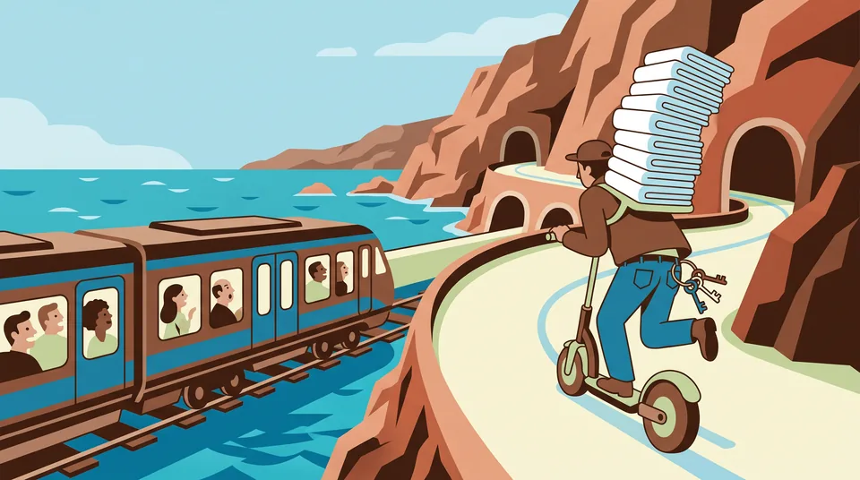

Barcelona and Sitges
The 2027 guide
What is on from November 2026 to December 2027, how to get between the two cities, and what the tourist tax adds to your bill. Checked on 30 October 2026.
Highlights of 2027

4–10 Feb 2027 · Sitges
Carnival
Dijous Gras on 4 February, the Disbauxa parade on Sunday 7, the Extermini parade on Tuesday 9 and the burial of the sardine on Ash Wednesday.

1–4 Mar 2027 · Fira Gran Via, Barcelona
Mobile World Congress
MWC and 4YFN bring the phone industry to Barcelona for four days. Bruc has beds for 10 and Gran Via sleeps 8, so a whole team can stay together.

About 7–17 Oct 2027 · Sitges
The 60th Sitges Film Festival
It began in 1968, and its Zombie Walk has run since 2008. The 2027 dates are not announced yet.

November to March · Both cities
Work by the sea in winter
Every flat lists a laptop-friendly workspace, and Sitges hotels were only 31% full in December 2025. Quiet season, bright mornings.
Between the cities
Barcelona to Sitges by train
The R2 Sud commuter line runs along the Garraf cliffs. Works in the Garraf tunnels disrupted the line from 16 March to 8 June 2026, and the tunnels have reopened.
- 37 minmedian trip from Barcelona Sants to Sitges
- 43 minmedian trip from Passeig de Gràcia
- 31 minon the fastest trains
- 15–20 minbetween trains, says the Sitges tourist office

Tourist tax
What the tax adds to your stay
Since 1 April 2026, per person per night in a tourist flat:
| Where | Now | Made up of | From 1 April 2027 |
|---|---|---|---|
| Barcelona | €9.50 | €4.50 regional tax plus the city’s €5.00 surcharge | €10.50 |
| Sitges | €1.75 | regional tax | €2.50 |
Example: 4 adults, 5 nights, November 2026
| Barcelona flat | 20 person-nights × €9.50 | €190.00 |
|---|---|---|
| Sitges flat | 20 person-nights × €1.75 | €35.00 |
| Difference | €155.00 |
Marc charges the tourist tax at check-in, separately from the price of your stay. From 1 April 2027 the rates rise to €10.50 in Barcelona and €2.50 in Sitges. The tax applies to at most 7 nights, and under-17s pay nothing. Marc’s house rules still mention the older Barcelona rate of €2.48, which no longer applies.
Calendar
Events, November 2026 to December 2027
Confirmed means the organiser or an official body has published the date. Provisional means official but marked provisional. Estimated means worked out from past editions. Unconfirmed means not announced, uncertain or only in third-party listings. All checked on 30 October 2026.
November 2026
| Dates | What and where | Status |
|---|---|---|
| 3–5 Nov | Smart City Expo World Congress, with a new housing congress alongsideFira Gran Via, Barcelona | Confirmed |
| 12–22 Nov | Malvasia WeekSitges | Confirmed |
| 17–19 Nov | IBTM World, the meetings and events trade fairFira Gran Via, Barcelona | Confirmed |
| 19–29 Nov | Tapa a Tapa and Endimaris food weeksSitges | Confirmed |
| About 27 Nov–23 Dec | Fira de Santa Llúcia Christmas marketBy the cathedral, Barcelona | Estimated |
December 2026
| Dates | What and where | Status |
|---|---|---|
| 5–8 Dec | Manga Barcelona, on the December long weekendFira Gran Via, Barcelona | Confirmed |
| 31 Dec | New Year’s Eve at the Font Màgica, which drew over 100,000 people last timeMontjuïc, Barcelona. Programme not out yet | Date fixed |
January 2027
| Dates | What and where | Status |
|---|---|---|
| 5 Jan | Three Kings paradesSitges and Barcelona. Times not out yet | Confirmed |
February 2027
| Dates | What and where | Status |
|---|---|---|
| 2–5 Feb | ISE, the audiovisual trade showFira Gran Via, Barcelona | Confirmed |
| 4–10 Feb | Sitges Carnival: Dijous Gras on 4 Feb, the Disbauxa parade on Sunday 7, the Extermini parade on Tuesday 9 and the burial of the sardine on Ash WednesdaySitges | Confirmed |
| 14 Feb | Barcelona half marathonBarcelona | Confirmed |
March 2027
| Dates | What and where | Status |
|---|---|---|
| 1–4 Mar | MWC and 4YFNFira Gran Via, Barcelona | Confirmed |
| 14 Mar | Zurich Marató BarcelonaBarcelona | Confirmed |
| Date not set | 69th Barcelona–Sitges vintage car rally, for cars built before 1928. The 68th ran on 28 Feb–1 Mar 2026Plaça de Sant Jaume to Sitges | Not announced |
| 26–29 Mar | Easter. Good Friday and Easter Monday are holidays in CataloniaBoth cities | Official |
April 2027
| Dates | What and where | Status |
|---|---|---|
| 12–18 Apr | Barcelona Open tennisBarcelona | Provisional |
| 20–22 Apr | Seafood Expo Global, which drew over 35,500 trade visitors last timeFira Gran Via, Barcelona | Confirmed |
| 23 Apr | Sant Jordi, the day of books and rosesBoth cities | Fixed date |
| 29 Apr–3 May | Bears Week, May editionSitges | Third-party listings |
May 2027
| Dates | What and where | Status |
|---|---|---|
| 30 May | Corpus flower carpetsSitges | Confirmed |
June 2027
| Dates | What and where | Status |
|---|---|---|
| 2–6 June | Primavera SoundParc del Fòrum, Barcelona | Confirmed |
| 9–13 June | Sitges PrideSitges | Confirmed |
| 10–13 June | EHA2027, the haematology congressBarcelona | Confirmed |
| 11–13 June | MotoGP CatalunyaMontmeló | Provisional |
| 17–19 June | Sónar. On 27 October 2026 its website became a “Sónar is dead, 1994–2026” page, which the press reads as a relaunch stuntBarcelona | Uncertain |
| 23–24 June | Sant Joan, the eve and the holidayBoth cities | Official |
August 2027
| Dates | What and where | Status |
|---|---|---|
| 23–24 Aug | Festa Major de Sant Bartomeu, main days. The wider programme ran 19–26 Aug in 2025 and 2026Sitges | Main days confirmed |
September 2027
| Dates | What and where | Status |
|---|---|---|
| 17–21 Sept | ESMO, the cancer congressFira Gran Via, Barcelona | One listing only |
| 23 Sept | Santa Tecla, Sitges’ second and smaller festa majorSitges | Confirmed |
| About 23–26 Sept | La Mercè, with Mexico City as the guest cityBarcelona | Estimated |
October 2027
| Dates | What and where | Status |
|---|---|---|
| 6–8 Oct | EUROSPINE, the spine congressCCIB, Barcelona | Confirmed |
| About 7–17 Oct | Sitges Film Festival, 60th edition. The 2026 edition ran 8–18 OctSitges | Not announced |
December 2027
| Dates | What and where | Status |
|---|---|---|
| 4–8 Dec | A five-day long weekend, with holidays on 6 and 8 DecBoth cities | Official |
Not in Barcelona in 2027
No Formula 1 at Montmeló in 2027: Barcelona now alternates with Spa and returns in 2028, and Spain’s 2027 race is in Madrid on 10–12 September. The Champions League final is in Madrid on 5 June and the Copa del Rey final is in Seville. Barça hopes to fill the Spotify Camp Nou by April 2027.
Clashes to plan around
ISE overlaps the first two days of Carnival, 4–5 February. Sitges Pride, the EHA congress and MotoGP all fall on 9–13 June, straight after Primavera Sound. Book early.
Two Sitges facts
Sitges says it has 300 sunny days a year. In Sitges even the hospital makes Malvasia wine, about 4,000 litres a year.
Every date and figure on this page has a public source. See the sources.